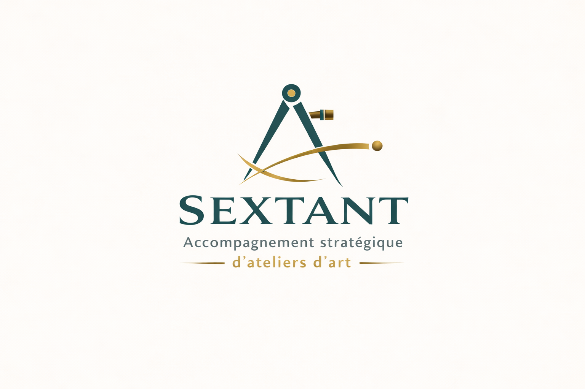

Accompagnement stratégique d’ateliers d’art
J’accompagne les artisans d’art à clarifier leur offre, piloter leur activité et construire un modèle économique cohérent avec leur créativité et la réalité du marché.